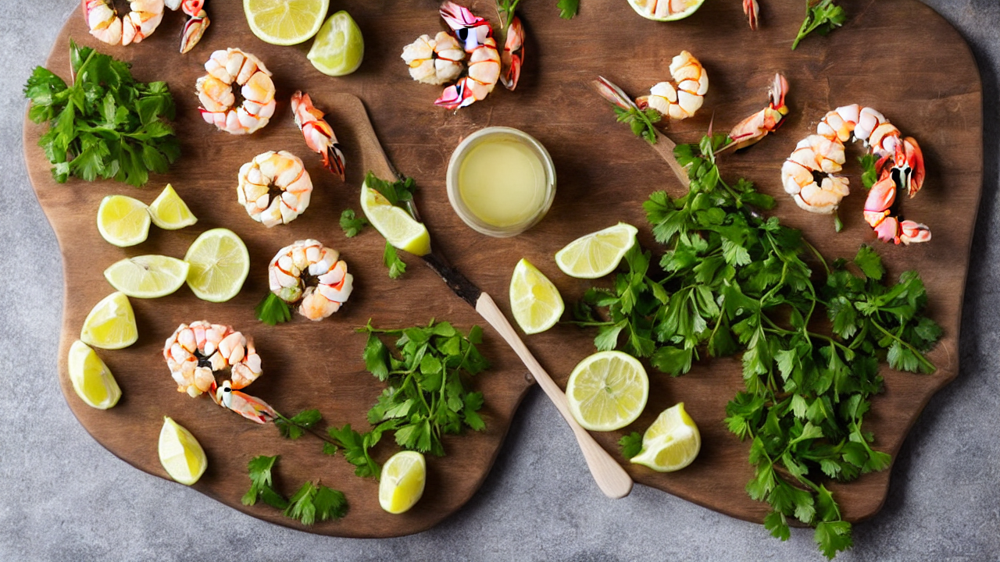
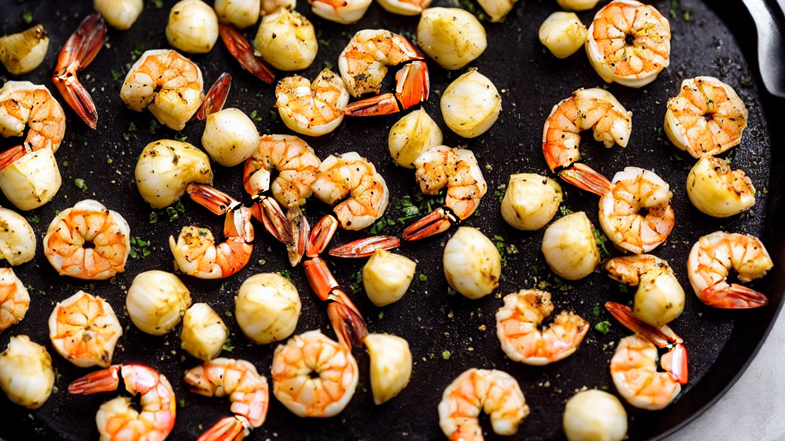
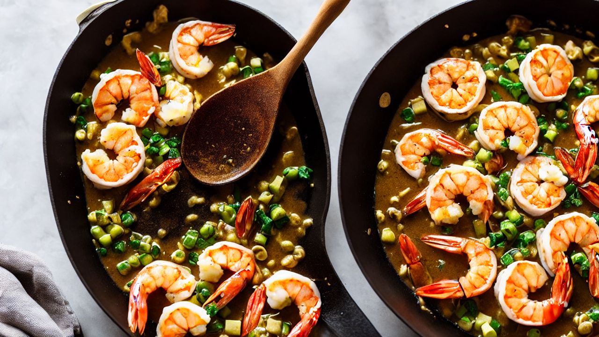
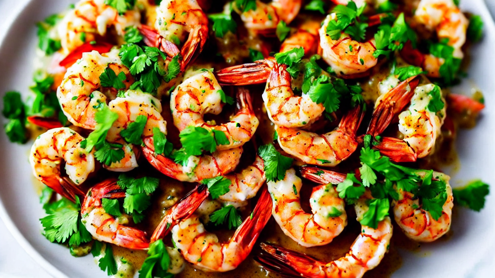
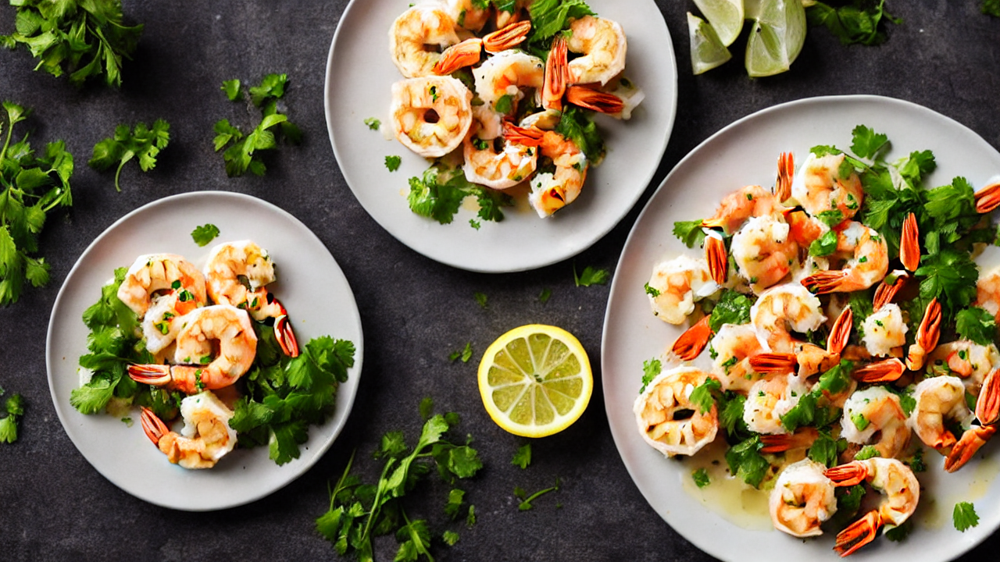
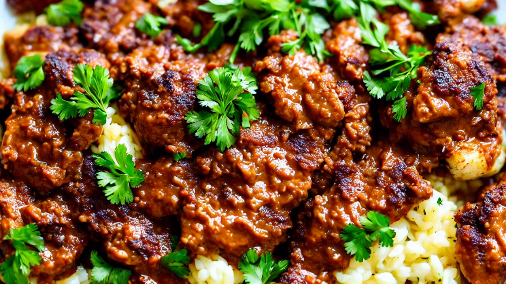

Creamy Garlic Tuscan Shrimp | Quick & Easy Seafood Recipe
Indulge in this rich, buttery shrimp dish with a garlicky cream sauce. Perfect for weeknight dinners or entertaining! Learn how to make creamy Garlic Tuscan Shrimp in under 30 minutes. #SeafoodRecipe #GarlicLovers
Ingredients
- your ingredients: shrimp
- garlic
- white wine
- butter
- cream
- parsley
- lemon
- This recipe uses minimal steps for maximum flavor
Instructions

Craving a decadent seafood dish? Today’s recipe delivers creamy garlic goodness with tender shrimp—no heavy cream needed! Let’s make this Tuscan favorite together.

Grab your ingredients: shrimp, garlic, white wine, butter, cream, parsley, and lemon. This recipe uses minimal steps for maximum flavor.

Sauté garlic in butter until golden, then add shrimp. Cook until shells turn pink and flesh is opaque—this takes just 3-4 minutes!

Deglaze the pan with white wine, then stir in cream. Let it simmer until the sauce thickens and coats the shrimp perfectly.

Taste and season with salt, then finish with fresh parsley and a squeeze of lemon. This dish is ready to impress!

Plate the shrimp in a warm bowl, spoon sauce over, and add a sprinkle of parsley. Pair with crusty bread for the ultimate comfort food!

Love this creamy Garlic Tuscan Shrimp? Hit subscribe for more easy, flavorful recipes! Share your creations in the comments below.